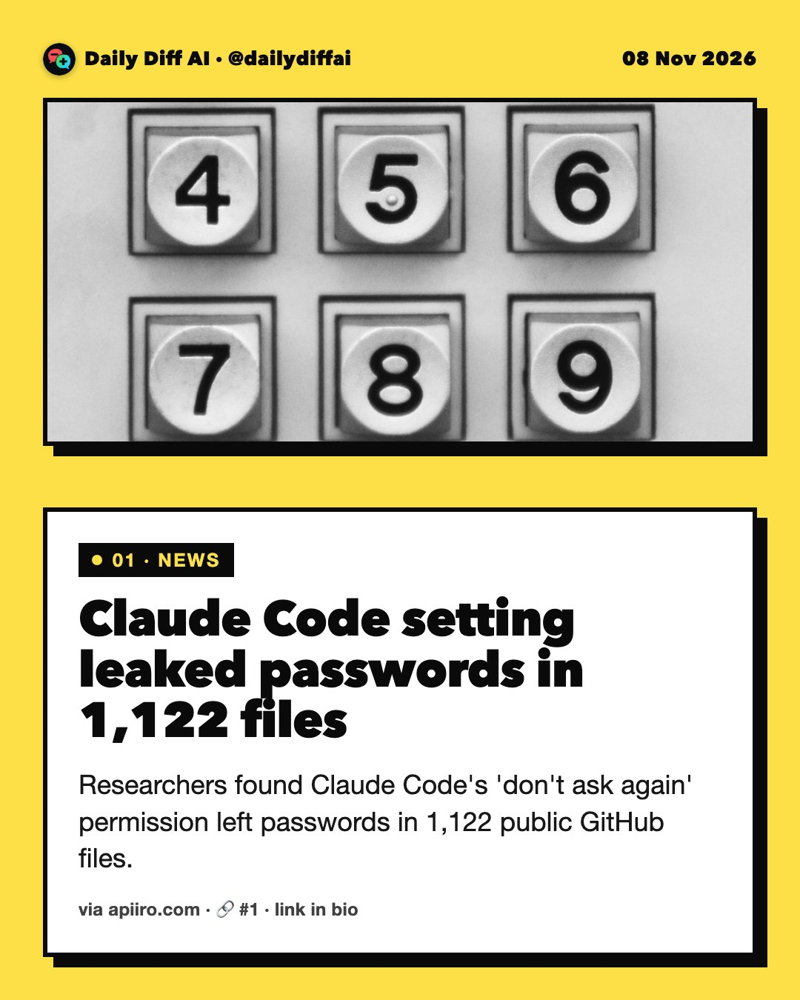
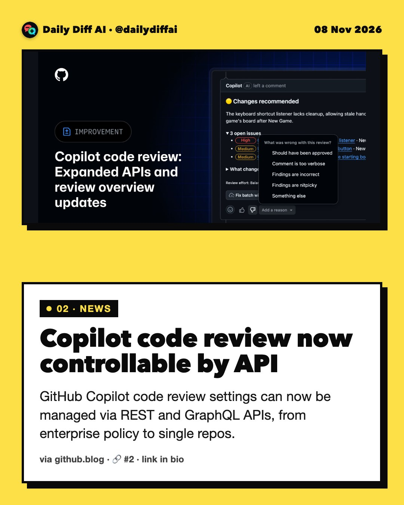
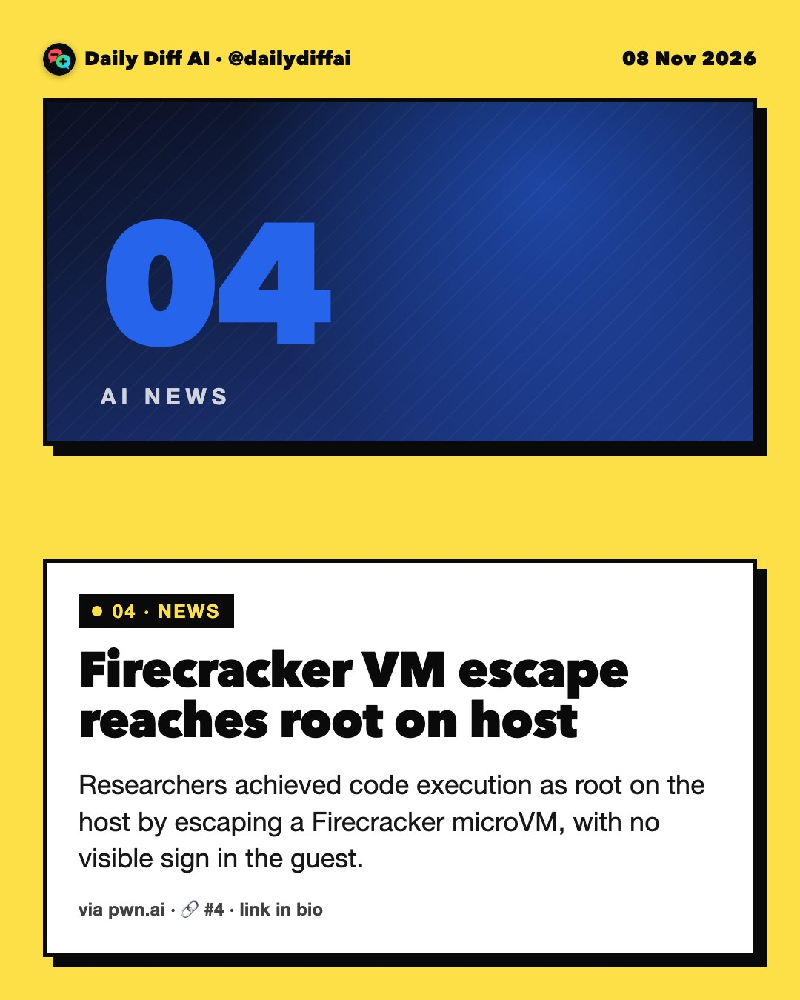
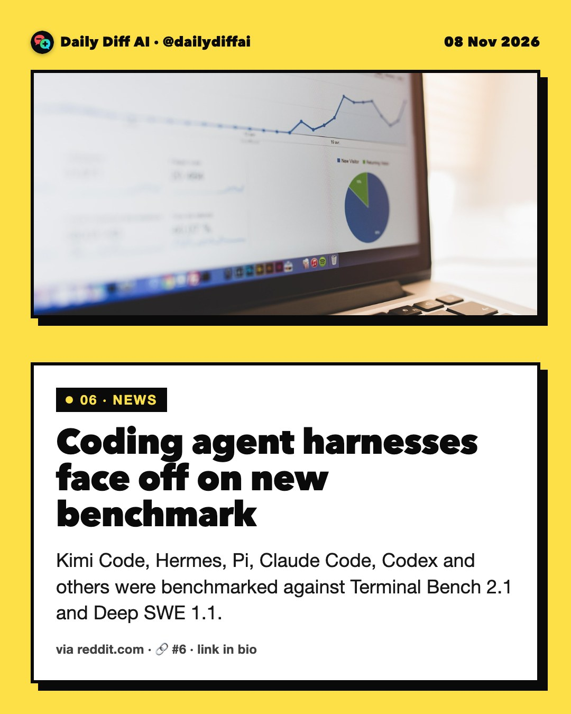

Daily Diff AI

Claude Code setting leaked passwords in 1,122 files
Researchers found Claude Code's 'don't ask again' permission left passwords in 1,122 public GitHub files.
Read on apiiro.com →
Copilot code review now controllable by API
GitHub Copilot code review settings can now be managed via REST and GraphQL APIs, from enterprise policy to single repos.
Read on github.blog →Copilot lands in Xcode and JetBrains Air
GitHub Copilot is now in JetBrains Air and Xcode's built-in coding assistant, in public preview from Xcode 27.3 beta.
Read on github.blog →
Firecracker VM escape reaches root on host
Researchers achieved code execution as root on the host by escaping a Firecracker microVM, with no visible sign in the guest.
Read on pwn.ai →Cheap model plus Opus cuts cost 4 times
Pairing a cheap decision model, Jev, with Claude Opus got close to Opus-level accuracy at four times lower cost, per Hightouch's own test.
Read on hightouch.com →
Coding agent harnesses face off on new benchmark
Kimi Code, Hermes, Pi, Claude Code, Codex and others were benchmarked against Terminal Bench 2.1 and Deep SWE 1.1.
Read on reddit.com →800+ copies of Chinese AI hacking tool exposed
Censys found over 800 publicly exposed copies of ARTEX, an AI-powered open-source pentest tool tied to attacks since July.
Read on techmeme.com →Audit your agent sandbox's real isolation
Don't trust the word 'sandboxed.' Name your agent's hypervisor, check its version against known VM escape advisories.

Microsoft Research's AI Frontiers group reportedly ends
A widely discussed Hacker News post reports the end of Microsoft Research's AI Frontiers group.
Read on hunch.net →
Nasscom warns AI threatens fresh grad hiring
Nasscom president Rajesh Nambiar warns AI could make it harder for fresh Indian engineering graduates to find jobs, urging a CS curriculum overhaul.
Read on techmeme.com →